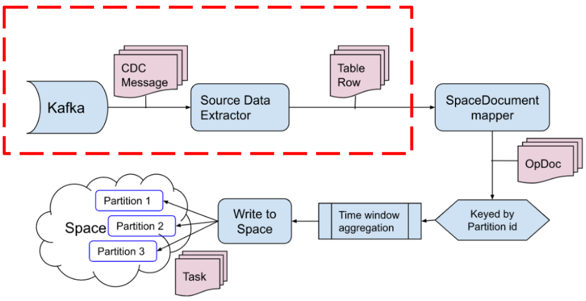

Data Integration (DI) IIDR Encryption
Overview
This page describes how to configure IIDR components (Access Server and Agents) for TCP/IP encryption.
This can be enabled between:
-
Access Server and Agents
-
Agents and Data Stores
Certificates
To enable TLS both Server and Client certificates need to be obtained.
Alternatively, you can create your own self-signed certificate (see below)
IIDR uses Java KeyStore format. Any certificate format can be converted to Jave KeyStore by using the keytool that is provided with the JDK.
Example:
PFX to JKS:

CER to JKS:

Ultimately, you should have 2 Java KeyStores:
-
A server certificate, for example: privatekey.jks
-
A client certificate, for example: trust.jks
Configuring TLS for Access Server and CHCCLP (CLI Client)
The Access Server uses the same port for both encrypted and unencrypted communication. The clients use STARTTLS over an unencrypted connection to beging using TLS encryption. The first few bytes that are sent in each direction are not encrypted. These bytes do not include any customer data.
Older clients do not send STARTTLS and the connection is not encrypted. Newer clients cannot disable encryption and always send STARTTLS when encryption is enabled in the Access Server.
When the Access Server has TLS encryption enabled, the client must trust the Access Server's certificate.
If the client cannot validate Access Server's certificate, the connection will fail. To avoid downtime, it is best practice to keep a record of the expiration date of all certificates used so they can be replaced before they expire.
Edit the tls.properties
It is recommended to limit access to tls.properties for admin user only:
tls.properties:

Where:
-
trustStorePath - The path to the trust store that contains trusted root certificates. Backslashes must be escaped with an extra backslash.
-
trustStorePassword - The password that is required to unlock the trust store
-
trustStoreType - The type of trust store: JKS or PKCS12
-
privateKeyStorePath - The path to the private key store that contains the private key and public certificate chain. Backslashes must be escaped with an extra backslash.
-
privateKeyStorePassword - The password that is required to unlock the private key store
-
privateKeyStoreType - The type of trust store: JKS or PKCS12
-
enableTLS - Whether to enable TLS (true or false)
-
datastoresAlwaysTLS - Specify false to support datastores that negotiate encryption with STARTTLS. Specify true to support datastores that always use TLS.
-
encodedStorePassword (optional) - Whether the password is in base 64 encoded format (true or false).
From version 11.4.0.4-11107 passwords can be stored in base64.
To use base64 password, add the following:

To get base64 format you can perform:

Configure TLS for Agents
To enable TLS for agents, a new profile should be created which contains the appropriate configuration for your environment.
Kafka agent example:
For DB Agent it’s a similar process, however, once you save the changes, you will have to provide the password of DB user (cdc-user)
Launch the configuration tool:
MAIN MENU
---------
1. List Current Instances
2. Add an Instance
3. Edit an Instance
4. Delete an Instance
5. Manage encryption profiles
6. Exit
Enter your selection: 5
MANAGE ENCRYPTION PROFILES
--------------------------
1. Add encryption profile
2. Edit encryption profile
3. Delete encryption profile
4. Completed management of encryption profiles
Enter your selection:1
Enter an encryption profile name: TLS1.2
Engine-to-engine encryption enablement:
1. Enabled
2. Disabled
3. Required
4. Always
Select the engine-to-engine encryption enablement [Enabled]: 1
Enter the path to the private key store: /data/gs_software/iidr/tls/privatekey.jks
Enter the password that was used to encrypt the private key store:
Private key store type:
1. JKS (Java)
2. JCEKS (Java Cryptography Extension)
3. PKCS12 (Public-Key Cryptography Standards)
Select the private key store type [JKS (Java)]: 1
Enter the path to the trust store [/data/gs_software/iidr/kafka/jre64/jre/lib/security/cacerts]: /data/gs_software/iidr/tls/trust.jks
Enter the password that was used to encrypt the trust store:
Trust store type:
1. JKS (Java)
2. JCEKS (Java Cryptography Extension)
3. PKCS12 (Public-Key Cryptography Standards)
Select the trust store type [JKS (Java)]: 1
MANAGE ENCRYPTION PROFILES
--------------------------
1. Add encryption profile
2. Edit encryption profile
3. Delete encryption profile
4. Completed management of encryption profiles
Enter your selection:4
If not already done, create a new instance and select the encryption profile you generated during the previous steps.
If you already have an instance, then:
-
Stop the instance
-
Run dmconfigurets tool, choose Edit an Instance
-
Select the particular instance (i.e: KAFKA)
-
Select [5] - Manage Encryption Profiles
-
Select the encryption profile created in the previous step
-
Select [7] - Save Changes and Return to the Main Menu
-
For the case of a DB Agent you will be prompted for the DB password
Saving changes. Please wait...
Re-type database password:
-
Return to the main menu and select Exit
Creating a Private Keystore and a Trust Store with Self-Signed Certificates
TLS encryption for the communication between a source and target can be enabled by using self-signed certificates.
In this case, there is no central certificate authority so each server must trust the other server's certificates. This procedure uses commands that ship with CDC Replication. You can also use third-party tools such as openssl. This procedure uses keytool, which is located under installation_directory/jre32/jre/bin.
Each server needs a private key and a self-signed certificate which can generated using the keytool -genkeypair command.
The openssl command-line utility cannot create a PKCS12 trust store that is compatible with CDC Replication. Use keytool instead of openssl. Change the -storetype parameter to PKCS12 to create a PKCS12 trust store.
Example:
Hostname (CN) = ip-10-0-1-137.eu-west-1.compute.internal
IP: 10.0.1.137


If you are using a combination of both self-signed certificates and certificates that are signed by a public certificate authority, then you need to trust the normal public certificate authorities in addition to the self-signed certificates. You can import the normal public certificate authorities into a new Truststore by using the keytool -importkeystore command.
For example:

Configuring the TLS DI Subscription Manager
Create a tls.properties file at …/di-subscription-manager/latest-di-subscription-manager
Comment out the private key lines and use only the truststore lines:
Restart the di-subscription-manager and test it using Swagger.
Testing the TLS Configuration
You can test your tls configuration by running the Access Server and CHCCLP client.
Both the Access Server and CHCCLP use the same tls.properties configuration file.
Run the Access Server:

Run the cli client:
Connect to the Access Server:

To confirm that the Access Server is running in TLS mode through the UI console, look for the yellow lock icon located at the bottom of the window:
.
To verify that the Access Server is running in TLS mode through the UI console, look for the yellow lock icon located beside the Datastores on the left side.
SSL Debugging and Troubleshooting
To debug and troubleshoot SSL, add this java property for each Java process:

References
https://www.ibm.com/docs/en/idr/11.4.0?topic=console-configuring-tls-encryption
https://www.ibm.com/support/pages/node/876488
https://www.ibm.com/support/pages/node/792347?mhsrc=ibmsearch_a&mhq=private%20key%20keystore
Data Integration (DI) is the gateway for incoming data into the Data Integration Hub (DIH) system. The DI components are delivered as part of the
DI contains four components which are responsible for reading and analyzing Kafka messages and for pushing them into the Space.
DI Layer Overview
The DI Module is illustrated as follows:

1. Apache Flink
Extract transform load (ETL) is a common approach used to convert and move data between storage systems. Often, ETL jobs are periodically triggered to copy data from transactional database systems to an analytical database or data warehouse. Data pipelines serve a similar purpose as ETL jobs in that they transform and enrich data and can move it from one storage system to another, However, they operate in a continuous streaming mode instead of being periodically triggered.
Additional Information: Apache Flink.
2. Metadata Manager (MDM)
The Metadata Manager (MDM) is a stateful data service which communicates with external components via REST APIs. It can be deployed as a standalone application. It uses Zookeeper (ZK) as a persistent data store.
Functionality
The MDM stores, edits and retrieves information for the following:
-
The source table structure
-
The structure mapping to the space type
-
The data types conversion maps
-
The configurations of the DI Manager and Pipeline, which are DI layer components
-
The pluggable CDC templates
-
The created and dropped types in the Space
The MDM refreshes its metadata on-demand from sources into the MDM data store (ZK). The MDM compares and repairs stored metadata against created objects and in Space. The MDM also provides information about stored metadata over REST to the UI and DI Manager.
3. DI Processor
The DI Processor is a Java library deployed to the Flink cluster. It is operated by the Flink Task Manager and is part of the Flink job. It is used to process Kafka messages and automatically identifies the consumed message format based on a pluggable CDC template. It converts messages into a Space document and writes the Space document to the Space.
Flow
